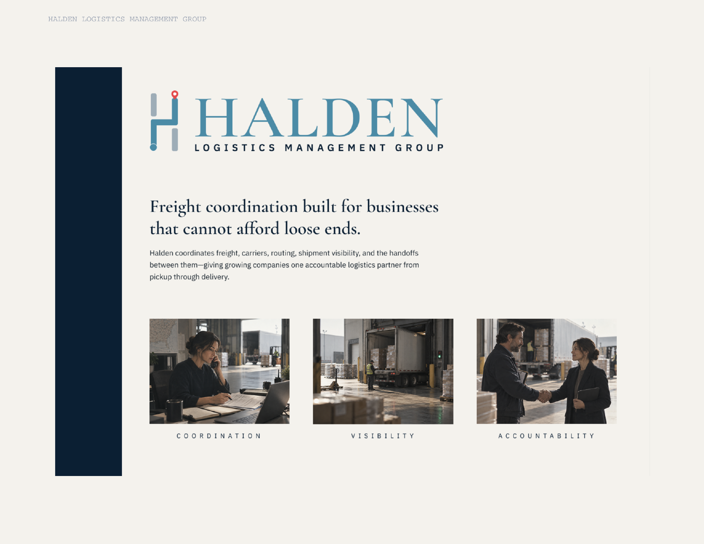

Identity / Web
Northline Systems
Managed IT / Cloud Infrastructure / Cybersecurity
Dark by default. Blue when it matters.
A technical identity system for a team making complex infrastructure feel clear, capable, and human.
View project
Selected Work
Brand identity, websites, and content for businesses that needed to show up better.
Identity / Web
Managed IT / Cloud Infrastructure / Cybersecurity
Dark by default. Blue when it matters.
A technical identity system for a team making complex infrastructure feel clear, capable, and human.
View projectIdentity / Web
Freight coordination built for businesses that cannot afford loose ends.
Built to move with precision.
Identity, editorial language, and a website system built around coordination, visibility, and accountability.
View project
View project →Identity / Packaging / Web
Brand redesign for a bakery where craft is part of every detail.
Practical. Aesthetic. Packaged with care.
A warm identity, JB monogram, website, packaging, and product story shaped around bread made by hand.
View project View project →
View project →
Let’s work together